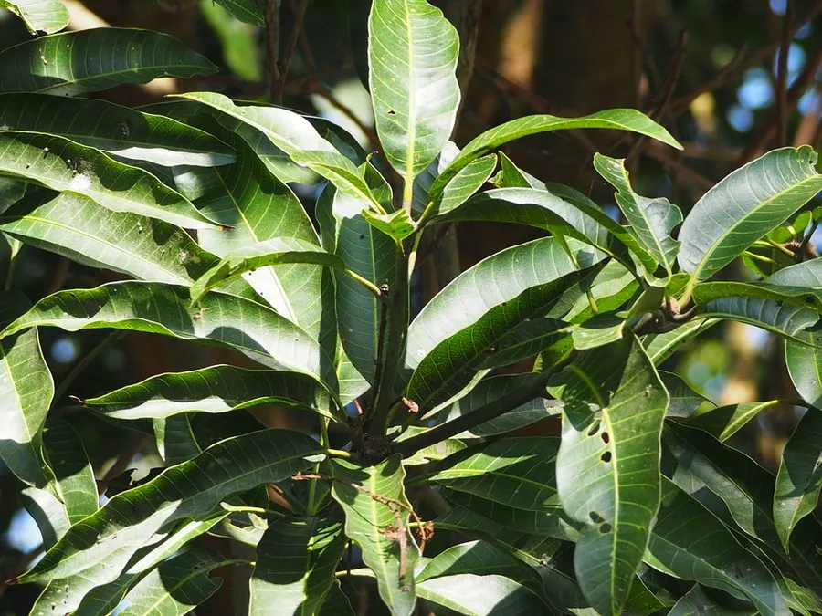

乔木 · 植物界
芒果 Mangifera indica

世界著名的热带水果，果实香甜多汁、富含胡萝卜素，原产南亚，是印度与东南亚重要的经济果树，栽培历史悠久。
- 分类
- 门被子植物门纲木兰纲目无患子目科漆树科属芒果属
- 栖息环境
- 海拔 800 米以下的热带亚热带干热地区，喜高温、光照充足
- 地理分布
- 原产印度、缅甸一带，中国海南、广东、广西、云南、福建等地栽培
- 保护级别
- 暂无评估；中国未列入国家重点保护野生植物名录
物种志
芒果为常绿大乔木，高可达 25 m，树冠浓密，树皮灰褐色；叶片互生，革质，披针形至长椭圆形，新叶常呈紫红色或铜红色，老叶深绿。花期 3–4 月，圆锥花序顶生，花小、淡黄色或带红色；果实为核果，形状与大小因品种而异，成熟时呈黄、橙、红或绿色，果肉橙黄、香甜多汁，内含扁平坚硬的种子。
芒果原产印度、缅甸一带，中国海南、广东、广西、云南、福建、台湾等地栽培，喜高温干热、光照充足，适宜深厚肥沃、排水良好的土壤，不耐寒。印度是世界最大的芒果生产国，芒果在印度文化中象征吉祥与爱情；中国栽培历史可追溯到唐代。果实可鲜食、制果汁、果干与果酱，未熟果可做凉拌菜；叶片与树皮可入药，木材可制家具。芒果的汁液可能引起部分人皮肤过敏，食用时需注意。
形态与习性
- 株高可达 25 m，树冠浓密
- 花期3–4 月，花小、淡黄色
- 果期5–9 月，依品种而异
- 光照喜光，不耐长期荫蔽
- 水分耐旱，怕积水
- 土壤深厚肥沃、排水良好的壤土
- 主要用途鲜食水果、果汁果干、木材制家具、叶皮入药
趣味知识
- 芒果新叶常呈紫红色或铜红色，老叶深绿，是芒果树的典型特征。
- 印度是世界最大的芒果生产国，芒果在印度文化中象征吉祥与爱情。
- 芒果的汁液含有漆酚类物质，部分人接触后可能引起皮肤过敏。
- 中国栽培芒果的历史可追溯到唐代，如今海南、广西是主产区。